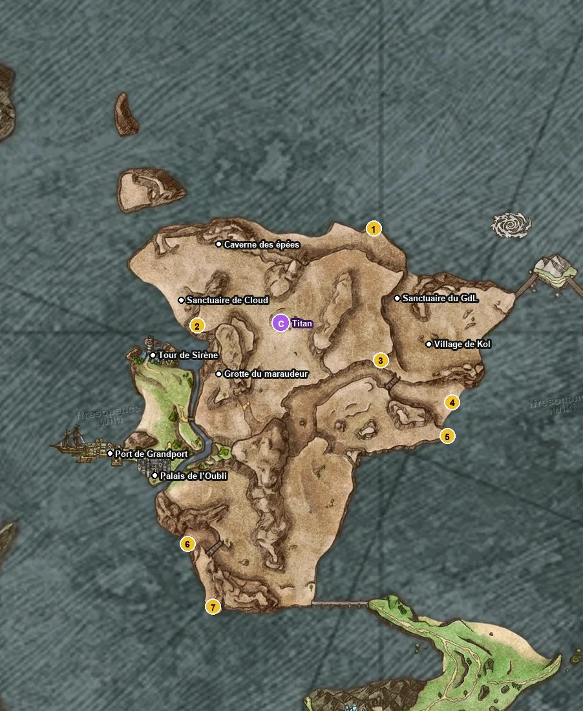
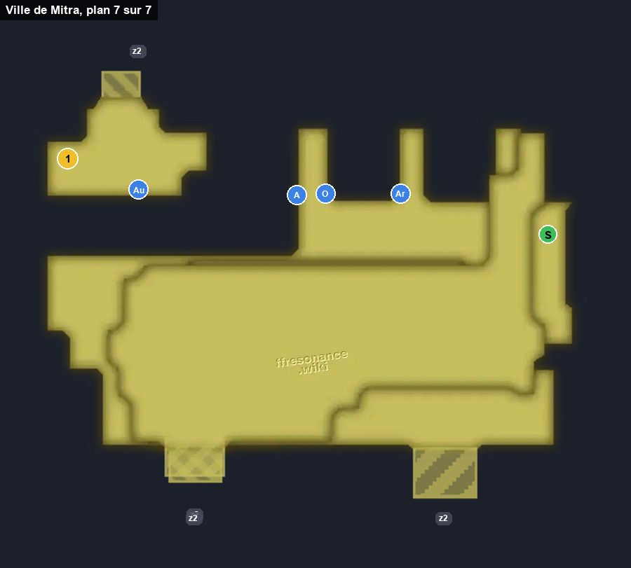
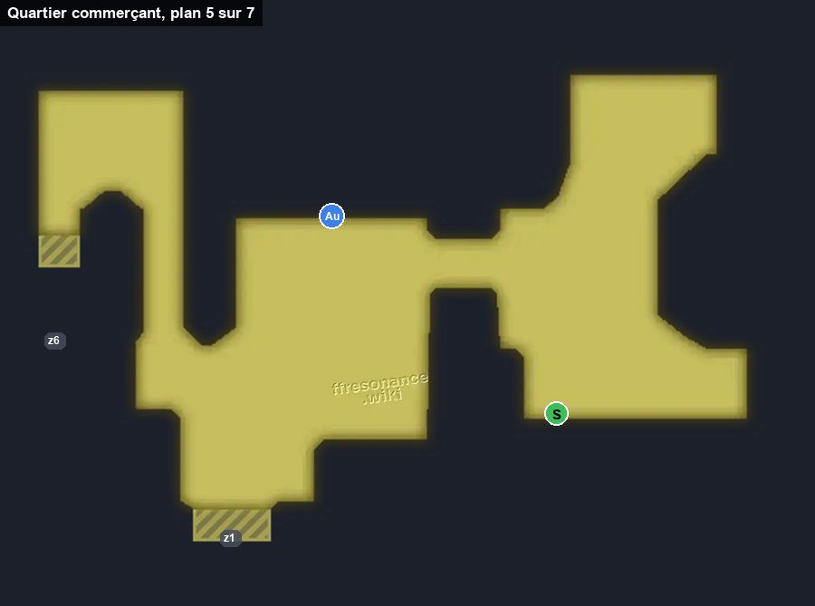
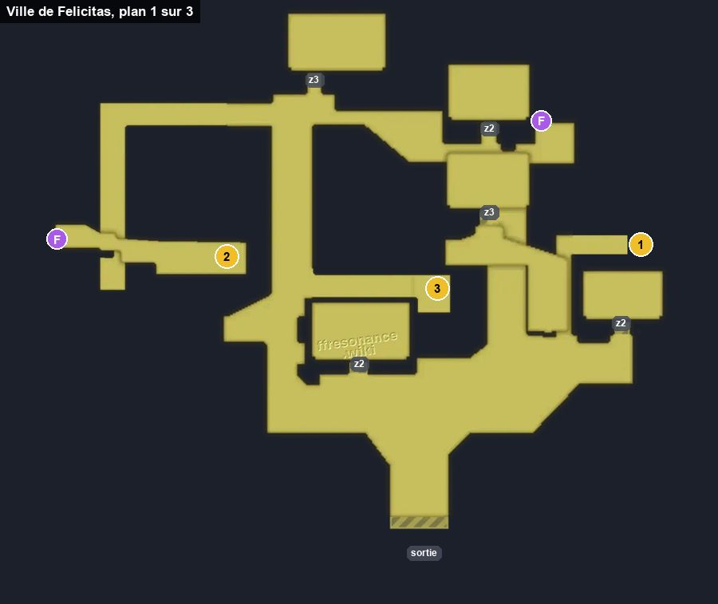
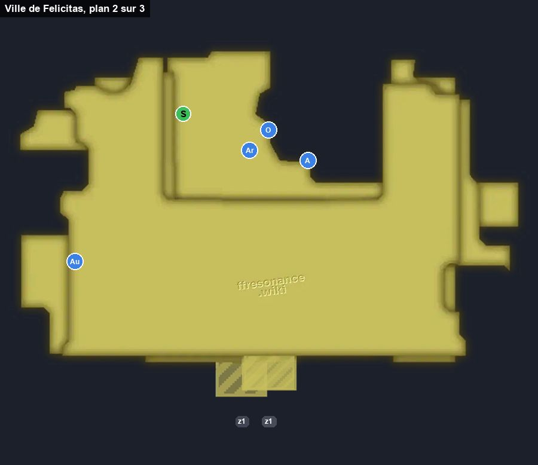
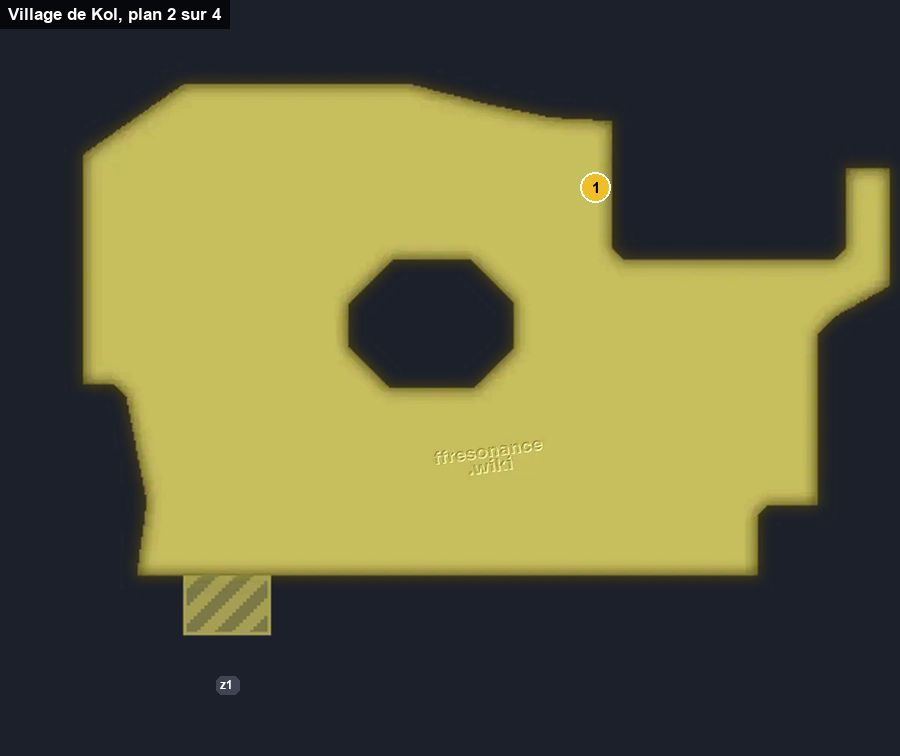
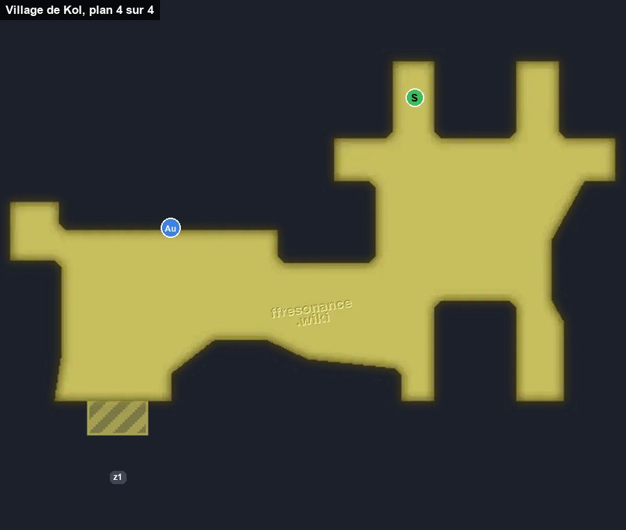
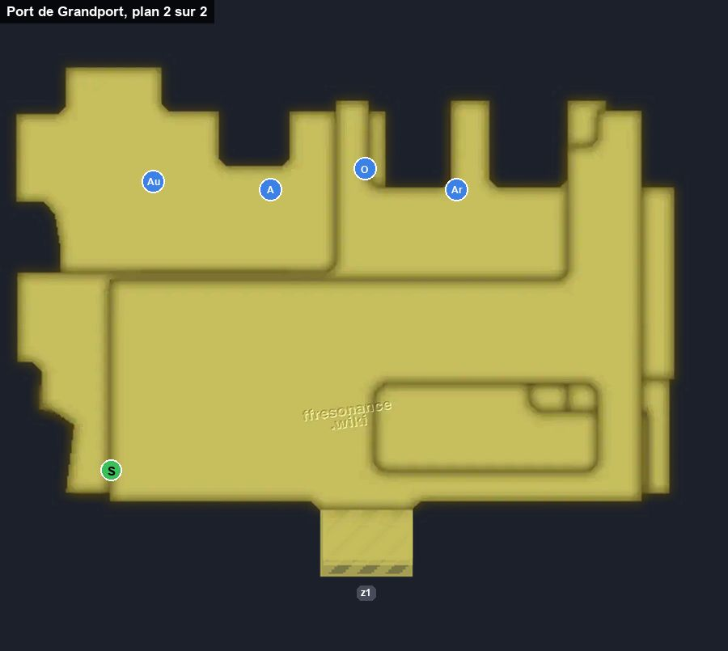

Partie 02
Chapitre 1 : En quête de vérité
L'essentiel
- Les boss : Belmodar au Temple de la Terre, le Cavalier de l'enfer au château, Voracité aux ruines de Kolobos, et Sirène au sommet de sa tour, de loin le plus dur des quatre.
- Ne rate pas : la Brumipotion offerte par un habitant du château, qui disparaît dès l'objectif 9, et le Chapelet à 1 500 gils à Grandport, qui annule le Charme de Sirène.
- Les choix : trois conversations à embranchements, aux objectifs 1, 8 et 17. L'histoire ne change jamais, mais deux donnent un bonus permanent — à Rain à l'objectif 1, à Fina à l'objectif 17.
- Avant de partir : achète le Chapelet à Grandport avant de monter dans la tour de Sirène, et garde une magie de Foudre sur quelqu'un.
Objectif
Comprendre pourquoi la barrière du Temple de la Terre faiblit, et découvrir en chemin que la réponse dépasse largement une mission de routine pour deux soldats du roi.
Concrètement : traverser l'île de Grandshelt du temple jusqu'au port, récupérer ta première Vision, survivre à l'attaque du château, et embarquer pour Dirnado.
Itinéraire

L'île Grandshelt sur la mappemonde — objets à ramasser sur la carte : 1. Potion ; 2. Super-brumipotion ×2 ; 3. Herbe antidote ×2 ; 4. Potion ×2 ; 5. Pierre de pouvoir ; 6. Herbe antidote ×2 ; 7. Tente ; 8. Brumipotion ; 9. Éther ; 10. Parchemin feu I ×2 ; 11. Chaussures d’Idaten · fouilles au radar : R7. Cristal de magilithe

L'île Grandport sur la mappemonde — objets à ramasser sur la carte : 1. Lame de paralysie ×5 ; 2. Parchemin eau I ×2 ; 3. Bruméther ; 4. Cape zéphyr ; 5. Arc floral ; 6. Éther ×2 ; 7. Potion ×3 · C : Titan

L'île Kolobos sur la mappemonde — objets à ramasser sur la carte : 1. Parchemin glace I ×2 ; 2. Tente ; 3. Éther ; 4. Lame de poison ×2
- 📍 La zone en images : la soluce française du chapitre 1 donne les 18 objectifs un par un avec les coffres, et la route détaillée du Temple de la Terre montre les embranchements coffre par coffre.
L'itinéraire est une grande boucle sur l'île de Grandshelt, et il vaut la peine de l'avoir en tête parce que tu repasses deux fois par Felicitas :
Château de Grandshelt → Temple de la Terre → Mitra → retour au château → Felicitas → village de Kol → Felicitas → ruines de Kolobos → Grandport → tour de Sirène → le bateau.
Deux repères pour ne pas te perdre. Le Temple de la Terre a un point de sauvegarde avec téléportation : il te ramène à l'entrée, où un garde te soigne gratuitement, puis te renvoie devant le boss. Et sur la carte du monde, le chocobo de location du village de Kol accélère tout le reste du chapitre.
Déroulé pas à pas
Du château au Temple de la Terre
-
Quitte le château de Grandshelt par l'ouest, puis descends l'escalier. C'est l'objectif 1, et il s'accompagne de ta première conversation à trois réponses, qui donne à Rain un bonus permanent : +3 Force, +3 Endurance ou +3 Esprit. Aucune ne change l'histoire. Rain étant le Défenseur du groupe, l'Endurance est le choix le plus cohérent.
-
Parle aux deux gardes devant le temple avant d'entrer :
- garde de droite : il te vend des objets ;
- garde de gauche : il te soigne gratuitement, et le point de sauvegarde est juste derrière lui.
-
Fouille à droite du point de sauvegarde : une Potion et un Éther.
-
Examine le Temple de la Terre, objectif 2. Huit coffres t'attendent sur trois zones.

Temple de la Terre, plan 3 sur 3 — coffres : 1. Potion ; 2. Éther · ? : objet à examiner · S : point de sauvegarde · boutiques : Au auberge, O objets
Temple de la Terre, plan 1 sur 3 — coffres : 1. Queue de phénix ; 2. Parchemin feu I ×2 ; 3. Nodachi · S : point de sauvegarde
Temple de la Terre, plan 2 sur 3 — coffres : 1. Potion ×3 ; 2. Gilet pare-balles ; 3. 400 gils · zN : passage vers la zone N -
Première zone : prends tout de suite à droite et descends les marches. Au nord-ouest, une Queue de phénix. Puis en haut du chemin, un passage sur la droite cache le Nodachi — un katana nettement supérieur à l'arme de départ de Lasswell, équipe-le immédiatement. Un chemin caché au sud du grand pilier donne deux Parchemin feu I.
-
Deuxième zone, à l'est du chemin principal, une salle avec trois objets :
- Potion ×3 ;
- Gilet pare-balles, à équiper aussitôt sur qui n'a rien ;
- 400 gils.
-
Passe par le point de sauvegarde au nord. Téléporte-toi à l'entrée, fais-toi soigner gratuitement par le garde de gauche, et reviens. C'est gratuit et c'est bête de s'en priver.
-
Bats Belmodar, niveau 4, 2 000 PV, faible au Feu et aux Ténèbres, et il divise par deux les dégâts de Foudre. Les attaques de Feu de Rain vident sa jauge d'étourdissement ; le Glace de Lasswell fait les dégâts. Quand la jauge est à zéro, il perd un tour, encaisse davantage, et ton groupe gagne une action supplémentaire en fin de round.
Mitra, la Vision et l'attaque du château
-
Rends-toi à la ville de Mitra, objectif 3. Cinq coffres sur sept zones : Queue de phénix, deux Éther séparés, Queue de phénix ×3 en zone 2, et une Tente en zone 7. Un endroit à examiner donne 200 gils — ce n'est pas un coffre, juste un point d'interaction.

Ville de Mitra, plan 2 sur 7 — coffres : 1. Queue de phénix ; 2. Éther ; 3. Éther ; 4. Queue de phénix ×3 · boutiques : Ac accessoires · zN : passage vers la zone N
Ville de Mitra, plan 7 sur 7 — coffres : 1. Tente · S : point de sauvegarde · boutiques : Ar armures, A armes, O objets, Au auberge · zN : passage vers la zone N -
Fais le tour des quatre boutiques de Mitra : auberge, objets, armes, armures et accessoires. C'est ton premier vrai réapprovisionnement.
-
Va chez Rain, puis inspecte la maison, objectifs 4 et 5.
-
Équipe-toi d'une Vision, objectif 6. C'est le vrai début du jeu : les Visions sont les fantômes de héros Final Fantasy que tu invoques en combat, et la partie 11 explique où sont les 26.
-
Retourne au château de Grandshelt, objectif 7, qui est attaqué.
-
Prends la Brumipotion offerte par un habitant du château. Une seule fois, et elle n'est plus disponible dès l'objectif 9.
-
Enchaîne les trois combats sans fuite du château : trois Squelette niveau 4, trois autres, puis trois Squelette obscur niveau 5 accompagnés du boss.
-
Bats le Cavalier de l'enfer, niveau 6, 4 000 PV, faible à la Glace et à la Lumière.
-
Sauve le roi de Grandshelt, objectif 8, et réponds-lui. Deux réponses possibles, même suite.
-
Ramasse les neuf coffres du château sur ses quatre zones :
- zone 1 : Parchemin feu I ×2, Parchemin feu I ×3, Herbe antidote ×4 ;
- zone 2 : Queue de phénix, Tenue noire, Super-brumipotion ×2, Tenue trompeuse, Queue de phénix ×2, Bruméther +.
<p class="visuel" data-visuel="02-plan-06.jpg"><img src="images/02-plan-06.jpg" alt="Château de Grandshelt, plan 5 sur 12 — coffres : 1. Potion ou 800 gils ; 2. Potion ou 500 gils · zN : passage vers la zone N" width="560"><br><small>Château de Grandshelt, plan 5 sur 12 — coffres : 1. Potion ou 800 gils ; 2. Potion ou 500 gils · zN : passage vers la zone N</small></p>
<p class="visuel" data-visuel="02-plan-07.jpg"><img src="images/02-plan-07.jpg" alt="Château de Grandshelt, plan 6 sur 12 — coffres : 1. Lordly Robes (nom anglais) ; 2. Potion ou 1000 gils ; 3. Queue de phénix · S : point de sauvegarde · zN : passage vers la zone N" width="560"><br><small>Château de Grandshelt, plan 6 sur 12 — coffres : 1. Lordly Robes (nom anglais) ; 2. Potion ou 1000 gils ; 3. Queue de phénix · S : point de sauvegarde · zN : passage vers la zone N</small></p>
<p class="visuel" data-visuel="02-plan-08.jpg"><img src="images/02-plan-08.jpg" alt="Château de Grandshelt, plan 9 sur 12 — coffres : 1. Parchemin feu I ×2 ; 2. Parchemin feu I ×3 ; 3. Herbe antidote ×4 · S : point de sauvegarde · zN : passage vers la zone N" width="560"><br><small>Château de Grandshelt, plan 9 sur 12 — coffres : 1. Parchemin feu I ×2 ; 2. Parchemin feu I ×3 ; 3. Herbe antidote ×4 · S : point de sauvegarde · zN : passage vers la zone N</small></p>
<p class="visuel" data-visuel="02-plan-09.jpg"><img src="images/02-plan-09.jpg" alt="Château de Grandshelt, plan 10 sur 12 — coffres : 1. Queue de phénix ; 2. Tenue noire ; 3. Super-brumipotion ×2 ; 4. Tenue trompeuse ; 5. Queue de phénix ×2 ; 6. Bruméther + · zN : passage vers la zone N" width="560"><br><small>Château de Grandshelt, plan 10 sur 12 — coffres : 1. Queue de phénix ; 2. Tenue noire ; 3. Super-brumipotion ×2 ; 4. Tenue trompeuse ; 5. Queue de phénix ×2 ; 6. Bruméther + · zN : passage vers la zone N</small></p>
<p class="visuel" data-visuel="02-plan-10.jpg"><img src="images/02-plan-10.jpg" alt="Château de Grandshelt, plan 1 sur 12 — coffres : 1. Parchemin feu I ×3 · zN : passage vers la zone N" width="560"><br><small>Château de Grandshelt, plan 1 sur 12 — coffres : 1. Parchemin feu I ×3 · zN : passage vers la zone N</small></p>
-
Affronte Umbra, niveau 17, 99 999 PV, faible à la Lumière. C'est un combat scénarisé : que tu gagnes ou que tu perdes, l'histoire est la même. Tente-le pour voir, sans y laisser tes objets.
-
Fouille la capitale royale : un Éther et 400 gils. Puis le Quartier commerçant : une Source régénérante et deux fois 300 gils.

Grandshelt, capitale royale, plan 1 sur 12 — coffres : 1. Éther ; 2. 400 gils · S : point de sauvegarde · boutiques : O objets, Au auberge
Grandshelt, capitale royale, plan 2 sur 12 — coffres : 1. Queue de phénix ×3 ; 2. 400 gils
Quartier commerçant, plan 1 sur 7 — coffres : 1. Source régénérante · F : fragment de tablette · boutiques : BV Visions, O objets, A armes, Ac accessoires · zN : passage vers la zone N
Quartier commerçant, plan 2 sur 7 — coffres : 1. 300 gils · zN : passage vers la zone N
Quartier commerçant, plan 5 sur 7 — S : point de sauvegarde · boutiques : Au auberge · zN : passage vers la zone N -
Prends la quête annexe Rêve idéaliste au Quartier commerçant. Détails dans la partie 13.
Felicitas, Kol et le chocobo
-
Rends-toi à Felicitas, objectif 9. Quatre coffres sur trois zones : Parchemin glace I ×2, une Tente et Fumigène ×2 en zone 1, puis Corne de licorne ×2 en zone 3. Ramasse aussi les deux Fragment de tablette.

Ville de Felicitas, plan 1 sur 3 — coffres : 1. Parchemin glace I ×2 ; 2. Tente ; 3. Fumigène ×2 · F : fragment de tablette (×2) · zN : passage vers la zone N
Ville de Felicitas, plan 2 sur 3 — S : point de sauvegarde · boutiques : A armes, Au auberge, O objets, Ar armures · zN : passage vers la zone N
Ville de Felicitas, plan 3 sur 3 — coffres : 1. Corne de licorne ×2 · zN : passage vers la zone N -
Accepte les cadeaux du Quartier commerçant de Felicitas : deux habitants offrent Potion ×3 et un Éther, une fois chacun.
-
Encaisse le combat contre trois Gobelin niveau 6 sur la route.
-
Va au village de Kol, objectif 10, et dors à l'auberge, objectif 11. Deux coffres sur quatre zones : une Tente et Herbe antidote ×3, plus un Fragment de tablette.

Village de Kol, plan 1 sur 4 — F : fragment de tablette · zN : passage vers la zone N
Village de Kol, plan 2 sur 4 — coffres : 1. Tente · zN : passage vers la zone N
Village de Kol, plan 3 sur 4 — coffres : 1. Herbe antidote ×3 · zN : passage vers la zone N
Village de Kol, plan 4 sur 4 — S : point de sauvegarde · boutiques : Au auberge · zN : passage vers la zone N -
Loue un chocobo, objectif 12. La carte du monde devient beaucoup moins pénible.
-
Détour conseillé à pied : le Fourmilion niveau 20 ne se rencontre que sur la route à pied, et le Maraudeur niveau 15 attend dans la Grotte du maraudeur — il donne un Fragment de magilithe, l'une des deux monnaies d'éveil des Visions.
-
Retourne à Felicitas, objectif 13, pour rejoindre les ruines.
Kolobos, Grandport et la tour de Sirène
- Entre dans les ruines de Kolobos, objectif 14. Quatre coffres sur deux zones :
- zone 1 : Éther ×2, Herbe antidote ×3 ;
- zone 2 : Lame de poison ×2, Camisolépine ;
- plus deux Fragment de tablette.
<p class="visuel" data-visuel="02-plan-20.jpg"><img src="images/02-plan-20.jpg" alt="Ruines de Kolobos, plan 1 sur 2 — coffres : 1. Éther ×2 ; 2. Herbe antidote ×3 · F : fragment de tablette (×2) · zN : passage vers la zone N" width="560"><br><small>Ruines de Kolobos, plan 1 sur 2 — coffres : 1. Éther ×2 ; 2. Herbe antidote ×3 · F : fragment de tablette (×2) · zN : passage vers la zone N</small></p>
<p class="visuel" data-visuel="02-plan-21.jpg"><img src="images/02-plan-21.jpg" alt="Ruines de Kolobos, plan 2 sur 2 — coffres : 1. Lame de poison ×2 ; 2. Camisolépine · S : point de sauvegarde · zN : passage vers la zone N" width="400"><br><small>Ruines de Kolobos, plan 2 sur 2 — coffres : 1. Lame de poison ×2 ; 2. Camisolépine · S : point de sauvegarde · zN : passage vers la zone N</small></p>
-
Passe le pont et ses deux combats imposés : trois Soldat spectral niveau 5, puis quatre Soldat spectral renforcé niveau 9.
-
Cherche la mère d'Emma, objectif 15, et bats Voracité, niveau 9, 2 500 PV, faible à la Glace.
-
Reste en garde : Voracité revient aussitôt en Voracité v2, niveau 10, 7 000 PV, cette fois faible à la Lumière. Change d'élément entre les deux formes, c'est tout l'enjeu du combat.
-
Prends la quête annexe Secrets dévoilés sur place.
-
Trouve un bateau à Grandport, objectif 16. Deux coffres : Parchemin foudre I ×2 et Fumigène ×2, plus deux Fragment de tablette, et une scène qui donne un Fragment de magilithe.

Port de Grandport, plan 1 sur 2 — coffres : 1. Parchemin foudre I ×2 ; 2. Fumigène ×2 · F : fragment de tablette (×2) · boutiques : BV Visions · zN : passage vers la zone N
Port de Grandport, plan 2 sur 2 — S : point de sauvegarde · boutiques : Au auberge, O objets, A armes, Ar armures · zN : passage vers la zone N -
Achète le Chapelet à 1 500 gils chez le marchand d'armures et d'accessoires. Il empêche le Charme, et c'est exactement ce que Sirène va t'infliger.
-
Passe à la boutique de Visions de Grandport, la première du jeu.
-
Rends visite à Sirène, objectif 17, et grimpe sa tour. Sept coffres sur une seule zone :
- Sakura-fubuki, une arme ;
- un deuxième Chapelet, et un Fragment de magilithe ;
- Éther, Éther ×2, Herbe d'écho ×2 ;
- trois Fragment de tablette ;
- et le coffre des Gants de Genji, qui est piégé.
<p class="visuel" data-visuel="02-plan-24.jpg"><img src="images/02-plan-24.jpg" alt="Tour de Sirène, plan — coffres : 1. Gants de Genji ; 2. Sakura-fubuki ; 3. Fragment de magilithe ; 4. Chapelet ; 5. Éther ; 6. Éther ×2 ; 7. Herbe d’écho ×2 · F : fragment de tablette (×3) · S : point de sauvegarde · zN : passage vers la zone N" width="400"><br><small>Tour de Sirène, plan — coffres : 1. Gants de Genji ; 2. Sakura-fubuki ; 3. Fragment de magilithe ; 4. Chapelet ; 5. Éther ; 6. Éther ×2 ; 7. Herbe d’écho ×2 · F : fragment de tablette (×3) · S : point de sauvegarde · zN : passage vers la zone N</small></p>
- Décide pour les Gants de Genji. Ouvrir le coffre fait surgir Gilgamesh, niveau 11, 6 000 PV : il vole les gants et s'enfuit, et tu ne peux pas l'en empêcher. Le coffre est entièrement optionnel, les gants se récupèrent plus tard, et la partie 20 détaille toute la poursuite. Le seul gain immédiat est un Éther, à voler au premier tour.
- Bats Sirène, niveau 11, 20 000 PV, faible à la Foudre, et elle résiste à l'Eau. Son attaque Séduction charme ton groupe : avec le Chapelet, le problème disparaît.
- Encaisse ta première Chimère. Sirène rejoint Fina après le combat : c'est la seule des neuf Chimères que le jeu te donne automatiquement, et elle apporte en prime un Fragment de magilithe. Son invocation, Voix ensorcelante, peut endormir et rendre muet tout le groupe ennemi. Partie 12.
- Réponds-lui après le combat : trois réponses, qui donnent cette fois un bonus permanent à Fina — +10 PM, +3 Endurance ou +3 Esprit. Comme elle est ta seule soigneuse, les +10 PM sont le choix sûr.
- Prends la quête annexe Le poids de la pitié dans la tour, et Coup de main au port une fois l'objectif 18 affiché.
- Monte à bord du bateau pour Dirnado, objectif 18. Rien ne se ferme derrière toi : tu pourras revenir.
Quêtes et lieux
Les 18 objectifs, dans l'ordre
| № | Objectif tel qu'il s'affiche |
|---|---|
| 1 | Quitter le château de Grandshelt |
| 2 | Examiner le Temple de la Terre |
| 3 | Se rendre à la ville de Mitra |
| 4 | Aller chez Rain |
| 5 | Inspecter la maison de Rain |
| 6 | S'équiper d'une vision |
| 7 | Se rendre au château de Grandshelt |
| 8 | Sauver le roi de Grandshelt |
| 9 | Se rendre à Felicitas |
| 10 | Se rendre au village de Kol |
| 11 | Séjourner à l'auberge du village de Kol |
| 12 | Louer un chocobo |
| 13 | Se rendre à Felicitas |
| 14 | Se rendre aux ruines de Kolobos |
| 15 | Chercher la mère d'Emma |
| 16 | Trouver un bateau à Grandport |
| 17 | Rendre visite à Sirène |
| 18 | Monter à bord du bateau pour Dirnado |
Les objectifs 9 et 13 portent le même libellé. Ce n'est pas un bug d'affichage : tu passes bien deux fois à Felicitas, avant et après le village de Kol.
Les villes et ce qu'elles proposent
| Lieu | Zones | Coffres | Boutiques |
|---|---|---|---|
| Château de Grandshelt | 4 | 9 | — |
| Grandshelt, capitale royale | — | 2, plus le Quartier commerçant | Quartier commerçant |
| Temple de la Terre | 3 | 8 | Un garde vendeur, un garde soigneur |
| Ville de Mitra | 7 | 5 | Auberge, objets, armes, armures et accessoires |
| Ville de Felicitas | 3 | 4 | Quartier commerçant |
| Village de Kol | 4 | 2 | Auberge, location de chocobo |
| Ruines de Kolobos | 2 | 4 | — |
| Port de Grandport | 2 | 2 | Armures et accessoires, boutique de Visions |
| Tour de Sirène | 1 | 7 | — |
Les boss et les combats notables
| Combat | Niveau | PV | Faiblesse | Note |
|---|---|---|---|---|
| Belmodar | 4 | 2 000 | Feu, Ténèbres | Divise la Foudre par deux. Récompense : 300 EXP, 750 gils, Queue de phénix |
| Cavalier de l'enfer | 6 | 4 000 | Glace, Lumière | Arrive avec trois Squelette obscur |
| Umbra | 17 | 99 999 | Lumière | Scénarisé : victoire ou défaite, même suite |
| Voracité | 9 | 2 500 | Glace | Enchaîne directement sur sa seconde forme |
| Voracité v2 | 10 | 7 000 | Lumière | La faiblesse change entre les deux formes |
| Sirène | 11 | 20 000 | Foudre, résiste à l'Eau | Séduction charme le groupe. Le Chapelet l'annule. Elle devient ta première Chimère |
| Gilgamesh | 11 | 6 000 | Aucune | Optionnel et imbattable. Jauge d'étourdissement de 1 000 |
| Fourmilion | 20 | — | — | Optionnel, sur la route de Kol, à pied seulement |
| Maraudeur | 15 | — | — | Optionnel, Grotte du maraudeur. Donne un Fragment de magilithe |
| Pot citrin | 15 | — | — | Dans la tour de Sirène, parmi les ennemis normaux |
Les ennemis ordinaires, par lieu
| Lieu | Ennemis |
|---|---|
| Temple de la Terre | Lierre rampant, Noctule-acier, Rat-garou, Mandragore |
| Château de Grandshelt | Feu follet de feu, Squelette, Âme, Soldat spectral, Squelette obscur, Sergent |
| Ruines de Kolobos | Fantôme, Goule, Pauplium, Œil flottant, Soldat imposteur, Ancien chevalier, Arme magitech |
| Tour de Sirène | Abtu, Sahuagin, Élémentaire cyan, Mage, Flambos vert, Requin, Pot citrin |
Les quatre quêtes annexes du chapitre
| Quête | Où la prendre |
|---|---|
| Rêve idéaliste | Quartier commerçant de Grandshelt, puis à poursuivre à Felicitas |
| Secrets dévoilés | Ruines de Kolobos |
| Le poids de la pitié | Tour de Sirène |
| Coup de main | Port de Grandport, à l'objectif 18 |
Aucune n'expire : une fois apparue, une quête annexe t'attend aussi longtemps qu'il faut. Le détail des 33 est dans la partie 13.
Butin exhaustif
| Nom exact | Type | Où / comment l'obtenir | Utilité |
|---|---|---|---|
| Nodachi | Arme, katana | Temple de la Terre, passage à droite en haut du chemin | Grosse amélioration pour Lasswell, dès la première heure |
| Sakura-fubuki | Arme, katana | Tour de Sirène | L'arme la plus forte du chapitre |
| Gilet pare-balles | Armure | Temple de la Terre, salle est de la zone 2 | Première armure correcte du jeu |
| Tenue noire | Armure | Château de Grandshelt, zone 2 | Équipement léger |
| Tenue trompeuse | Armure | Château de Grandshelt, zone 2 | Équipement léger |
| Camisolépine | Armure | Ruines de Kolobos, zone 2 | Armure de milieu de chapitre |
| Chapelet | Accessoire | Tour de Sirène, et en vente 1 500 gils à Grandport | Empêche le Charme : la réponse à Séduction |
| Chimère Sirène | Chimère | Battre Sirène au sommet de sa tour | La première des neuf, et la seule offerte par le scénario. Partie 12 |
| Gants de Genji | Accessoire | Tour de Sirène, coffre piégé | Volés par Gilgamesh à l'ouverture. Récupérables au chapitre 5, partie 20 |
| Potion | Consommable | Entrée du Temple de la Terre, ×3 en zone 2, ×3 offertes à Felicitas | Soin de base |
| Éther | Consommable | Temple de la Terre, Mitra ×2, Felicitas, ruines de Kolobos ×2, tour de Sirène ×3, capitale | Rend des points de magie |
| Queue de phénix | Consommable | Temple de la Terre, château ×3, Mitra ×4, et la récompense de Belmodar | Relève un personnage K.O. |
| Herbe antidote | Consommable | Château ×4, village de Kol ×3, ruines de Kolobos ×3 | Soigne le Poison |
| Herbe d'écho | Consommable | Tour de Sirène, ×2 | Soigne le Silence |
| Corne de licorne | Consommable | Felicitas, zone 3, ×2 | Soigne la Confusion |
| Fumigène | Consommable | Felicitas ×2, Grandport ×2 | Fuite garantie d'un combat normal |
| Tente | Consommable | Mitra zone 7, Felicitas zone 1, village de Kol | Soin de groupe sur la carte du monde |
| Brumipotion | Consommable | Offerte par un habitant du château, une seule fois | Soin de groupe |
| Super-brumipotion | Consommable | Château de Grandshelt, zone 2, ×2 | Soin de groupe amélioré |
| Bruméther + | Consommable | Château de Grandshelt, zone 2 | Points de magie pour tout le groupe |
| Source régénérante | Consommable | Quartier commerçant de Grandshelt | Soin |
| Parchemin feu I | Consommable offensif | Temple de la Terre ×2, château ×2 et ×3 | Dégâts de Feu sans dépenser de magie |
| Parchemin glace I | Consommable offensif | Felicitas, zone 1, ×2 | Dégâts de Glace |
| Parchemin foudre I | Consommable offensif | Grandport, zone 1, ×2 | Dégâts de Foudre, utile contre Sirène |
| Lame de poison | Consommable offensif | Ruines de Kolobos, zone 2, ×2 | Inflige le Poison |
| Fragment de tablette | Objet clé | Felicitas ×2, Kol ×1, Kolobos ×2, Grandport ×2, tour de Sirène ×3 | Ouvre les coffres du Palais de l'Oubli — ce n'est pas un objet d'éveil. Il y en a 99 dans le jeu, répartis dans 48 lieux. Partie 11 |
| Fragment de magilithe | Objet d'éveil | Scène à Grandport, tour de Sirène, le Maraudeur, et Sirène | Éveille une Vision au niveau 1. Partie 11 |
| 400 gils | Argent | Temple de la Terre, et capitale royale | — |
| 300 gils | Argent | Quartier commerçant de Grandshelt, deux fois | — |
| 200 gils | Argent | Mitra, endroit à examiner | — |
Conseils et pièges
Le Chapelet avant la tour, pas après
Sirène a 20 000 points de vie quand tes personnages en ont à peine deux cents. Le combat est long, et sa seule vraie menace est Séduction, qui charme un de tes personnages et le retourne contre toi.
Le Chapelet coûte 1 500 gils à Grandport, et il annule le Charme. À ce stade du jeu, c'est cher ; c'est quand même le meilleur achat du chapitre. Un second exemplaire se trouve dans la tour elle-même, donc tu peux en couvrir deux personnages.
Et puisqu'elle est faible à la Foudre : garde les deux Parchemin foudre I de Grandport pour elle.
Les faiblesses qui changent en cours de combat
Voracité est le premier boss à te l'apprendre : sa première forme est faible à la Glace, sa seconde à la Lumière. Si tu as construit tout ton tour sur la Glace, tu perds deux rounds à comprendre pourquoi ça ne rentre plus.
Prends le réflexe maintenant : à chaque changement de forme, relis la fiche de l'ennemi. Le jeu l'affiche.
La jauge d'étourdissement, expliquée par Belmodar
Belmodar est le boss qui sert de leçon. Deux idées à retenir :
- taper dans la faiblesse vide la jauge d'étourdissement plus vite ;
- jauge vide, l'ennemi perd un tour et encaisse davantage, et ton groupe gagne une action supplémentaire en fin de round.
C'est le cœur du système de combat de tout le jeu, et la partie 15 y revient en détail.
Le détour à pied qui vaut un Fragment de magilithe
Dès que tu as le chocobo, tu as envie de ne plus descendre. Fais quand même l'aller-retour à pied vers la Grotte du maraudeur : le Maraudeur niveau 15 donne un Fragment de magilithe, et ces fragments sont la ressource qui bloque l'éveil des Visions pendant toute la première moitié du jeu.
Le Fourmilion niveau 20 est sur le même trajet, et il ne se rencontre qu'à pied. Il est largement au-dessus de ton niveau : regarde-le, note-le, reviens plus tard.
Le téléporteur du Temple de la Terre
Le point de sauvegarde du temple téléporte vers l'entrée et revient. L'entrée a un garde qui soigne gratuitement. Dans un jeu où les Potions coûtent cher au chapitre 1, c'est de l'argent gagné : fais l'aller-retour avant Belmodar.
Alertes
- ⏳ La Brumipotion du château ne s'obtient qu'avant l'objectif 9. Un habitant du château de Grandshelt l'offre une seule fois, et il ne la propose plus dès que tu partiras pour Felicitas.
Check-list
- Première conversation à trois réponses faite, statistique choisie
- Les 8 coffres du Temple de la Terre vidés, Nodachi équipé sur Lasswell
- Gilet pare-balles équipé
- Belmodar battu
- Les 5 coffres de Mitra vidés, les 4 boutiques visitées
- Première Vision équipée
- Brumipotion offerte récupérée au château
- Cavalier de l'enfer battu, les 9 coffres du château vidés
- Umbra affronté, pour voir
- Quête Rêve idéaliste prise au Quartier commerçant
- Les 4 coffres de Felicitas vidés, cadeaux des habitants pris
- Chocobo loué au village de Kol
- Maraudeur battu, Fragment de magilithe récupéré
- Les 4 coffres des ruines de Kolobos vidés
- Voracité et Voracité v2 battus
- Quête Secrets dévoilés prise
- Chapelet acheté à Grandport
- Les 7 coffres de la tour de Sirène vidés, choix fait pour les Gants de Genji
- Sirène battue, Chimère Sirène obtenue, troisième conversation faite
- Quêtes Le poids de la pitié et Coup de main prises
- Les 10 Fragment de tablette et les 4 Fragment de magilithe du chapitre ramassés